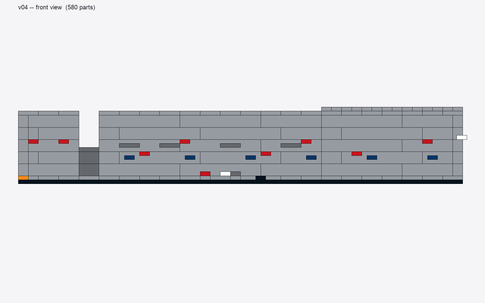
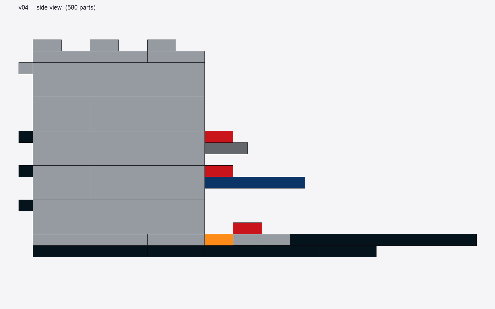
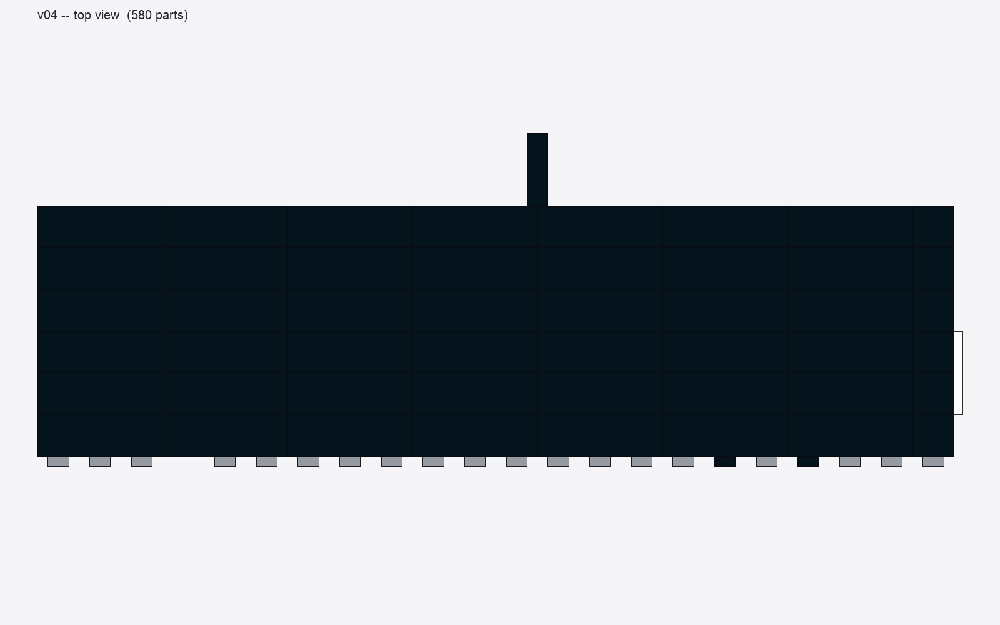

Code-driven original Lego MOC inspired by the official ASML employee-exclusive TWINSCAN EXE:5000C kit. Designed in pure Python, rendered headless. Not a reproduction of ASML's instruction booklet.
Download .ldr (LDraw model) Parts list (CSV) Parts list (Markdown)



Cumulative model state after each step. Click any to view full size.
Diorama, not sealed exterior. Closed front + closed left/right + closed top + closed bottom; open back to display the interior.
Modules along X: A (light source, 6 wide) → B (interconnect, 2 wide) → C (main body / projection optics, 22 wide) → D (wafer-handler tower, 14 wide).
Walls built with stacked 1×8 / 1×6 / 1×4 / 1×2 / 1×1 bricks in a running-bond pattern (alternate-layer offset of 2 studs).
Interior diorama has 5 zones, left → right: plasma chamber → service cabinets → EUV beam path → control/e-stop → vacuum pump tower with gauges.
Branding placeholders: black 1×8 tile front-edge (would be printed "ASML EXE:5000C" in real kit) and white 1×4 tile on Module D right side wall (would be printed "ASML"). Custom printed tiles would need to be ordered separately.